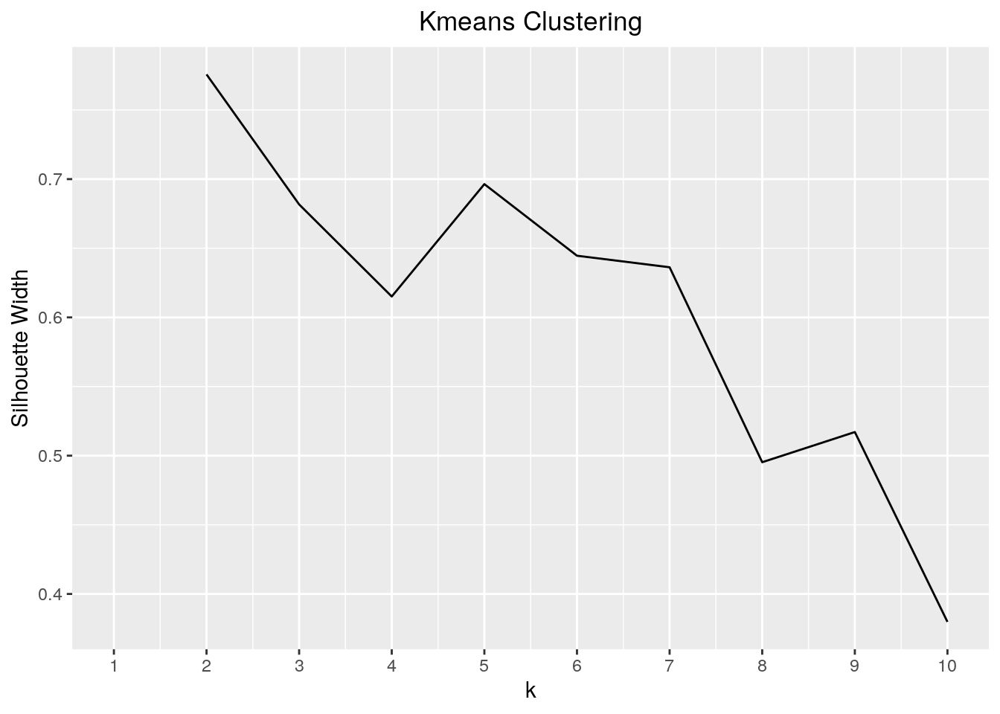
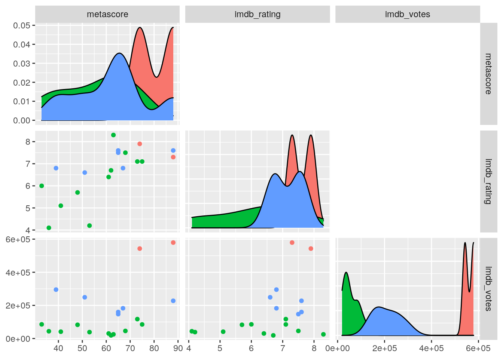

A knitted R Markdown document (ideally HTML) and the raw R Markdown file (as .Rmd) should both be submitted to Canvas by 11:59pm on the due date. These two documents will be graded jointly, so they must be consistent (i.e., don’t change the R Markdown file without also updating the knitted document).
The text of the document should provide a narrative structure around your code/output. All results presented must have corresponding code. Any answers/results/plots etc. given without the corresponding R code that generated the result will not be considered. Furthermore, all code contained in your final project document must work correctly (knit early, knit often)! Please do not include any extraneous code or code which produces error messages. (Code that produces warnings is acceptable, as long as you understand what the warnings mean!)
Prerequisite: Finding appropriate data from at least two sources per the instructions above: Failure to do this will result in a 0! You will submit a .Rmd file and a knitted document (html/pdf).
In this project, I will be looking at relationships between the IMDb ratings, number of votes and metascores of movies and shows that Disney+ and Netflix have in common. The two datasets that I am using, disney_plus_shows and netflix_titles, contain characteristics of shows and movies from the streaming services of Disney+ and Netflix. The disney_plus_shows dataset has been renamed to disney_plus for convenience and it contains 992 observations and 19 variables, three of which are numeric. The disney_plus dataset contains the following variables for each movie or show title: imdb ID, type (movie or show), plot, rate, year, date of release and date added to Disney+, runtime, genre, director, writer, actors, language, country, awards, metascore, and imdb rating and votes. The netflix_titles has been renamed to netflix_ for convenience and contains 7739 observations and 12 variables. The netflix_ dataset contains the following variables for each movie or show title: ID, title, type (movie or show), director, cast, date added to Netlix, country, year released, rating, duration, category the movie or show is listed in and description. These datasets were acquired through Kaggle and downloaded as csv files.
I chose these datasets because my family is full of movie and tv show series fanatics, and we actively use both of these streaming services. Also, I was interested in finding out what shows and movies Disney+ and Netflix have in common as well as the data for these shows and movies. Furthermore, I expect the two datasets to only share a select number of movies and shows.
# The two datasets and codes used rename the datasets are
# shown below:
library(tidyverse)
library(dplyr)
library(readr)
disney_plus_shows <- read_csv("disney_plus_shows.csv", col_types = cols(metascore = col_number(),
imdb_rating = col_number(), imdb_votes = col_number()))
library(readr)
netflix_titles <- read_csv("netflix_titles.csv")
disney_plus <- disney_plus_shows
netflix_ <- netflix_titlesMy datasets were already tidy, so I used the pivot_longer and pivot_wider functions to untidy and tidy my summary statistics. Pivot_longer was used to untidy the data by placing all of the statistical functions in one column and all of the results from each statistical function in one column: this actually helped me better see all of the summary statistics for each numeric variable. Pivot_wider was then used to tidy the data so that each row or result is relevant to each statistical function for each numeric variable.
# codes from joining:
disnet <- inner_join(disney_plus, netflix_, by = "title")
disnet1 <- subset(disnet, select = -c(20, 21, 22, 23, 24, 25,
26, 27, 28, 29, 30))
head(disnet1)## # A tibble: 6 x 19
## imdb_id title plot type.x rated year released_at added_at runtime genre
## <chr> <chr> <chr> <chr> <chr> <chr> <chr> <chr> <chr> <chr>
## 1 tt16206… A Wri… After … movie PG 2018 9-Mar-18 25-Mar-… 109 min Adven…
## 2 tt00820… Amy A woma… movie G 1981 20-Mar-81 12-Nov-… 100 min Famil…
## 3 tt09607… Bedti… A hote… movie PG 2008 25-Dec-08 5-Mar-20 99 min Comed…
## 4 tt59297… Befor… A look… movie PG 2016 30-Oct-16 12-Nov-… 96 min Docum…
## 5 tt03978… Bolt The ca… movie PG 2008 21-Nov-08 12-Nov-… 96 min Anima…
## 6 tt20786… Brain… An exa… series TV-G 2011– 9-Oct-11 12-Nov-… 30 min Docum…
## # … with 9 more variables: director.x <chr>, writer <chr>, actors <chr>,
## # language <chr>, country.x <chr>, awards <chr>, metascore <dbl>,
## # imdb_rating <dbl>, imdb_votes <dbl># codes for finding summary statistics overall:
disnet1_summarize_stats <- disnet1 %>% summarize_if(is.numeric,
list(mean = mean, sd = sd, min = min, max = max, n_distinct = n_distinct),
na.rm = T)
disnet1_summarize_stats## # A tibble: 1 x 15
## metascore_mean imdb_rating_mean imdb_votes_mean metascore_sd imdb_rating_sd
## <dbl> <dbl> <dbl> <dbl> <dbl>
## 1 60.5 6.70 95835. 16.2 1.32
## # … with 10 more variables: imdb_votes_sd <dbl>, metascore_min <dbl>,
## # imdb_rating_min <dbl>, imdb_votes_min <dbl>, metascore_max <dbl>,
## # imdb_rating_max <dbl>, imdb_votes_max <dbl>, metascore_n_distinct <int>,
## # imdb_rating_n_distinct <int>, imdb_votes_n_distinct <int># untidying and tidying summary statistics:
untidydisnetsum <- disnet1_summarize_stats %>% pivot_longer(1:15,
names_to = "functions", values_to = "results")
untidydisnetsum## # A tibble: 15 x 2
## functions results
## <chr> <dbl>
## 1 metascore_mean 60.5
## 2 imdb_rating_mean 6.70
## 3 imdb_votes_mean 95835.
## 4 metascore_sd 16.2
## 5 imdb_rating_sd 1.32
## 6 imdb_votes_sd 146266.
## 7 metascore_min 33
## 8 imdb_rating_min 3.3
## 9 imdb_votes_min 236
## 10 metascore_max 88
## 11 imdb_rating_max 8.8
## 12 imdb_votes_max 579293
## 13 metascore_n_distinct 17
## 14 imdb_rating_n_distinct 21
## 15 imdb_votes_n_distinct 32tidydisnetsum <- untidydisnetsum %>% group_by(functions) %>%
mutate(row = row_number()) %>% tidyr::pivot_wider(names_from = functions,
values_from = results) %>% select(-row)
head(tidydisnetsum)## # A tibble: 1 x 15
## metascore_mean imdb_rating_mean imdb_votes_mean metascore_sd imdb_rating_sd
## <dbl> <dbl> <dbl> <dbl> <dbl>
## 1 60.5 6.70 95835. 16.2 1.32
## # … with 10 more variables: imdb_votes_sd <dbl>, metascore_min <dbl>,
## # imdb_rating_min <dbl>, imdb_votes_min <dbl>, metascore_max <dbl>,
## # imdb_rating_max <dbl>, imdb_votes_max <dbl>, metascore_n_distinct <dbl>,
## # imdb_rating_n_distinct <dbl>, imdb_votes_n_distinct <dbl>I joined the two datasets using inner_join and named this joined dataset ‘disnet’. I chose to use inner_join because I wanted to focus on only the movies and tv shows (or titles) Disney+ and Netflix shared and drop all of the titles the two datasets did not share. When joined using inner_join, 8,579 titles were dropped that did not match between both datasets from the 8612 total titles. This left the new dataset with only 33 observations total and 32 unique titles total. After joining the datasets, there were duplicate variables from the Neflix dataset that I dropped using subset() and select() which indexed and selected the duplicated variables I wanted to drop. This left the final joined dataset, named ‘disnet1’, with 33 observations and 19 columns.
disnet <- inner_join(disney_plus, netflix_, by = "title")
disnet1 <- subset(disnet, select = -c(20, 21, 22, 23, 24, 25,
26, 27, 28, 29, 30))
head(disnet1)## # A tibble: 6 x 19
## imdb_id title plot type.x rated year released_at added_at runtime genre
## <chr> <chr> <chr> <chr> <chr> <chr> <chr> <chr> <chr> <chr>
## 1 tt16206… A Wri… After … movie PG 2018 9-Mar-18 25-Mar-… 109 min Adven…
## 2 tt00820… Amy A woma… movie G 1981 20-Mar-81 12-Nov-… 100 min Famil…
## 3 tt09607… Bedti… A hote… movie PG 2008 25-Dec-08 5-Mar-20 99 min Comed…
## 4 tt59297… Befor… A look… movie PG 2016 30-Oct-16 12-Nov-… 96 min Docum…
## 5 tt03978… Bolt The ca… movie PG 2008 21-Nov-08 12-Nov-… 96 min Anima…
## 6 tt20786… Brain… An exa… series TV-G 2011– 9-Oct-11 12-Nov-… 30 min Docum…
## # … with 9 more variables: director.x <chr>, writer <chr>, actors <chr>,
## # language <chr>, country.x <chr>, awards <chr>, metascore <dbl>,
## # imdb_rating <dbl>, imdb_votes <dbl>First, I used the filter(), select() and arrange() functions to explore my data. I used these functions in combination to find which title has the highest number of IMDb votes in the USA; this result was the movie title “Black Panther”. I then used mutate to create a new variable that was a function of imdb votes and ratings which produced the proportion of IMDb ratings to IMDb votes. I also used group_by() to explore the number of titles in each language and country and I found that the most titles (16 titles) are in English and in the USA.
To calculate the overall summary statistics of the numeric variables in my dataset, I used summarize(). I found that the mean IMDb rating was about 6.697, the mean number of IMDb votes was 95,835.03 and the mean metascore was about 60.526. I then calculated the summary statistics grouped by language. I found that the language category with the highest mean imdb votes was ‘English, Swahili, Nama, Xhosa, Korean’ while the language with the highest mean IMDb rating was ‘English, Spanish, Indonesian, Chinese, Arabic, Russian, Hindi, Tibetan, Portuguese, French, Thai, Norwegian, Italian, Japanese, Mongolian, Kazakh’ which is interesting, but makes sense since this language category offers the largest range of languages for movies or shows. Lastly, I used the cor() function to evaluate which pairs of my numeric variables have any correlation with one another; metascore and IMDb rating were the only pair that have the highest correlation, but this correlation is not very strong.
# Filter, arrange and select functions:
head(disnet1 %>% filter(country.x == "USA") %>% select(title,
imdb_votes) %>% arrange(desc(imdb_votes)))## # A tibble: 6 x 2
## title imdb_votes
## <chr> <dbl>
## 1 Black Panther 579293
## 2 Thor: Ragnarok 542938
## 3 National Treasure 295236
## 4 John Carter 248903
## 5 The Little Mermaid 227707
## 6 Bolt 182591# Group_by using 2 variables:
disnetlangcount <- disnet1 %>% group_by(language, country.x) %>%
summarize(count = n())
head(disnetlangcount)## # A tibble: 6 x 3
## # Groups: language [1]
## language country.x count
## <chr> <chr> <int>
## 1 English Canada, USA 1
## 2 English Canada, USA, UK, France 1
## 3 English UK 1
## 4 English USA 16
## 5 English USA, Australia 1
## 6 English USA, UK, Australia 1# Using mutate():
disnet_function <- disnet1 %>% mutate(imdb_rating_per_votes = imdb_rating/imdb_votes)
head(disnet_function)## # A tibble: 6 x 20
## imdb_id title plot type.x rated year released_at added_at runtime genre
## <chr> <chr> <chr> <chr> <chr> <chr> <chr> <chr> <chr> <chr>
## 1 tt16206… A Wri… After … movie PG 2018 9-Mar-18 25-Mar-… 109 min Adven…
## 2 tt00820… Amy A woma… movie G 1981 20-Mar-81 12-Nov-… 100 min Famil…
## 3 tt09607… Bedti… A hote… movie PG 2008 25-Dec-08 5-Mar-20 99 min Comed…
## 4 tt59297… Befor… A look… movie PG 2016 30-Oct-16 12-Nov-… 96 min Docum…
## 5 tt03978… Bolt The ca… movie PG 2008 21-Nov-08 12-Nov-… 96 min Anima…
## 6 tt20786… Brain… An exa… series TV-G 2011– 9-Oct-11 12-Nov-… 30 min Docum…
## # … with 10 more variables: director.x <chr>, writer <chr>, actors <chr>,
## # language <chr>, country.x <chr>, awards <chr>, metascore <dbl>,
## # imdb_rating <dbl>, imdb_votes <dbl>, imdb_rating_per_votes <dbl># Summary statistics overall:
disnet1_summarize_stats <- disnet1 %>% summarize_if(is.numeric,
list(mean = mean, sd = sd, min = min, max = max, n_distinct = n_distinct),
na.rm = T)
head(disnet1_summarize_stats)## # A tibble: 1 x 15
## metascore_mean imdb_rating_mean imdb_votes_mean metascore_sd imdb_rating_sd
## <dbl> <dbl> <dbl> <dbl> <dbl>
## 1 60.5 6.70 95835. 16.2 1.32
## # … with 10 more variables: imdb_votes_sd <dbl>, metascore_min <dbl>,
## # imdb_rating_min <dbl>, imdb_votes_min <dbl>, metascore_max <dbl>,
## # imdb_rating_max <dbl>, imdb_votes_max <dbl>, metascore_n_distinct <int>,
## # imdb_rating_n_distinct <int>, imdb_votes_n_distinct <int># Summarize using group_by:
groupbylanguagestats <- disnet1 %>% group_by(language) %>% summarize_if(is.numeric,
list(mean = mean, sd = sd), na.rm = T)
head(groupbylanguagestats)## # A tibble: 6 x 7
## language metascore_mean imdb_rating_mean imdb_votes_mean metascore_sd
## <chr> <dbl> <dbl> <dbl> <dbl>
## 1 English 60.3 6.66 84760. 12.1
## 2 English, America… NaN 6.6 236 NA
## 3 English, French 80.5 7.35 172394. 10.6
## 4 English, German 61 6.4 30336 NA
## 5 English, Norwegi… 36 4.1 43808 NA
## 6 English, Spanish 39 6.8 295236 NA
## # … with 2 more variables: imdb_rating_sd <dbl>, imdb_votes_sd <dbl># Correlation:
cordisnet <- disnet1 %>% select_if(is.numeric) %>% cor(use = "pair")
cordisnet## metascore imdb_rating imdb_votes
## metascore 1.0000000 0.6760070 0.4379407
## imdb_rating 0.6760070 1.0000000 0.2107868
## imdb_votes 0.4379407 0.2107868 1.0000000The correlation heatmap represents the correlation between the numeric variables in the disnet1 dataset. This graph showed that the pair of numeric variables that had the highest correlation (0.68) in my dataset were metascore and IMDb rating. However, this graph also shows that most of the other variables do not have strong correlations between each other and are instead more independent since their correlation coefficients are closer to zero than -1 or 1.
The scatterplot shows the relationship between IMDb votes and ratings in the disnet1 between the different types of titles (movies or series). From the graph, it can be concluded that the majority of movies and series have an IMDb rating between the range of about 6-8. Also, movies have a higher number of IMDb votes than series overall. However, it does not seem that there is a strong relationship between the number of IMDb votes and IMDb rating; even when rated higher, some movies and series still had a lower number of IMDb votes.
Finally, I used a barplot to compare the number of IMDb votes to the rating of a movie or series. For this barplot, I decided to use filter() and make another dataset version of ‘disnet1’ called ‘disnet2’ which would contain only movies and series rated “G”, “PG”, or “PG-13” because there are a couple duplicates of these ratings that are called different names like “TV-G”, and because I just wanted to focus on the most familiar ratings. After wrangling my dataset, I found that movies rated PG-13 had the highest number of IMDb votes compared to other ratings. Another interesting result is that it appears that in the ‘disnet2’ dataset, only movies were categorized as rated G, PG or PG-13 since the color purple which indicates series did not appear under these categories of ‘rated’.
# Correlation Heatmap
tidycordisnet <- cordisnet %>% as.data.frame %>% rownames_to_column("var1") %>%
pivot_longer(-1, names_to = "var2", values_to = "correlation")
tidycordisnet %>% ggplot(aes(var1, var2, fill = correlation)) +
geom_tile() + scale_fill_gradient2(low = "yellow", mid = "white",
high = "red") + geom_text(aes(label = round(correlation,
2)), color = "black", size = 4) + coord_fixed() + theme(axis.text.x = element_text(angle = 90,
hjust = 1)) + ggtitle("Correlation in IMDb Votes, IMDb Rating & Metascore") +
theme(plot.title = element_text(hjust = 0.5))# Scatterplot
ggplot(disnet1, aes(imdb_rating, imdb_votes, color = type.x)) +
geom_point() + theme(legend.position = c(0.9, 0.5)) + scale_color_manual(breaks = c("movie",
"series"), values = c("orange", "red")) + scale_y_continuous(limits = c(0,
6e+05), breaks = seq(0, 6e+05, by = 1e+05)) + ggtitle("IMBd Votes vs IMBd Rating") +
ylab("IMDb Votes") + xlab("IMDb Rating") + theme(plot.title = element_text(hjust = 0.5))# Barplot
disnet2 <- disnet1 %>% filter(rated == "G" & rated == "PG" &
rated == "PG-13")
target <- c("G", "PG", "PG-13")
disnet2 <- filter(disnet1, rated %in% target)
ggplot(disnet2, aes(x = rated, y = imdb_votes, fill = type.x)) +
geom_bar(stat = "summary", fun = mean, position = "dodge",
na.rm = T) + geom_errorbar(stat = "summary", fun.data = mean_se,
position = "dodge", na.rm = T) + ggtitle("IMDb Votes Related to Rate") +
xlab("Rated") + ylab("IMDb Votes") + theme(plot.title = element_text(hjust = 0.5))I first created another dataset from my original dataset with dropped NA values in order to cluster my data. After doing this, my new data set contained 19 total observations instead of the 33 original observations. I also only selected my numeric variables in this new dataset.
Then, I decided to cluster my data by 3 clusters; 2 clusters would have been optimal, but it seemed easier to visualize my data using 3 clusters. After I clustered my numeric data (metascore, IMDb votes and ratings) using 3 clusters, I found that the average silhouette width was about 0.66 which means that a reasonable structure has been found, but it could be stronger. Furthermore, I found that overall, titles with metascores higher than about 60 seemed to have higher IMDb ratings. Also, titles in cluster 1 had higher metascores, IMDb ratings and IMDb votes overall. However, it was harder to see any relationship between these variables for titles in clusters 2 and 3; as metascore or IMDb rating increased, the number of IMDb votes for these clusters did not fluctuate significantly.
disnetmeans <- disnet1 %>% na.omit() %>% select("metascore",
"imdb_rating", "imdb_votes")
library(cluster)
sil_width <- vector() #empty vector to hold mean sil width
for (i in 2:10) {
kms <- kmeans(disnetmeans, centers = i) #compute k-means solution
sil <- silhouette(kms$cluster, dist(disnetmeans)) #get sil widths
sil_width[i] <- mean(sil[, 3]) #take averages (higher is better)
}
ggplot() + geom_line(aes(x = 1:10, y = sil_width)) + scale_x_continuous(name = "k",
breaks = 1:10) + labs(x = "k (fixed number of clusters)",
y = "Silhouette Width", title = "Kmeans Clustering") + theme(plot.title = element_text(hjust = 0.5))
kmeans2 <- disnetmeans %>% kmeans(3) #3 centers, or number of clusters
kmeans2## K-means clustering with 3 clusters of sizes 2, 11, 6
##
## Cluster means:
## metascore imdb_rating imdb_votes
## 1 81.00000 7.60 561115.5
## 2 55.72727 6.20 55829.0
## 3 62.50000 7.15 210253.7
##
## Clustering vector:
## [1] 2 2 2 3 2 2 2 3 1 1 2 2 3 3 3 3 2 2 2
##
## Within cluster sum of squares by cluster:
## [1] 660843111 9925200004 16298836056
## (between_SS / total_SS = 94.4 %)
##
## Available components:
##
## [1] "cluster" "centers" "totss" "withinss" "tot.withinss"
## [6] "betweenss" "size" "iter" "ifault"kmeans2$size #how many in each cluster## [1] 2 11 6kmeans2clust <- disnetmeans %>% as.data.frame %>% mutate(cluster = as.factor(kmeans2$cluster))
kmeans2clust## metascore imdb_rating imdb_votes cluster
## 1 53 4.2 38659 2
## 2 33 6.0 85524 2
## 3 63 8.3 25171 2
## 4 67 6.8 182591 3
## 5 48 5.7 82825 2
## 6 41 5.1 41151 2
## 7 36 4.1 43808 2
## 8 51 6.6 248903 3
## 9 88 7.3 579293 1
## 10 74 7.9 542938 1
## 11 68 7.5 45667 2
## 12 61 6.4 30336 2
## 13 39 6.8 295236 3
## 14 65 7.5 147182 3
## 15 65 7.6 159903 3
## 16 88 7.6 227707 3
## 17 75 7.1 84999 2
## 18 73 7.1 117082 2
## 19 62 6.7 18897 2# visualizing clustered data
library(GGally)
ggpairs(kmeans2clust, columns = 1:3, aes(color = cluster), upper = NULL)
library(cluster)
pam1 <- kmeans2clust %>% pam(k = 3)
pam1## Medoids:
## ID metascore imdb_rating imdb_votes cluster
## [1,] 6 41 5.1 41151 2
## [2,] 4 67 6.8 182591 3
## [3,] 10 74 7.9 542938 1
## Clustering vector:
## [1] 1 1 1 2 1 1 1 2 3 3 1 1 2 2 2 2 1 2 1
## Objective function:
## build swap
## 36285.31 30139.12
##
## Available components:
## [1] "medoids" "id.med" "clustering" "objective" "isolation"
## [6] "clusinfo" "silinfo" "diss" "call" "data"disnet1[pam1$id.med, ]## # A tibble: 3 x 19
## imdb_id title plot type.x rated year released_at added_at runtime genre
## <chr> <chr> <chr> <chr> <chr> <chr> <chr> <chr> <chr> <chr>
## 1 tt20786… Brain… An exa… series TV-G 2011– 9-Oct-11 12-Nov-… 30 min Docum…
## 2 tt59297… Befor… A look… movie PG 2016 30-Oct-16 12-Nov-… 96 min Docum…
## 3 tt01034… The L… The 19… series TV-Y 1992… 11-Sep-92 12-Nov-… 25 min Anima…
## # … with 9 more variables: director.x <chr>, writer <chr>, actors <chr>,
## # language <chr>, country.x <chr>, awards <chr>, metascore <dbl>,
## # imdb_rating <dbl>, imdb_votes <dbl>pam1$silinfo$avg.width #average silhouette width## [1] 0.6585358plot(pam1, which = 2) #gives avg silhouette width and silhouette widths of each cluster.